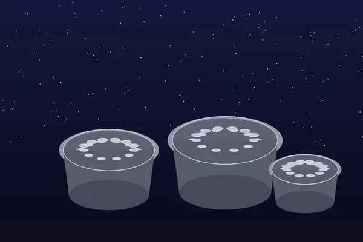
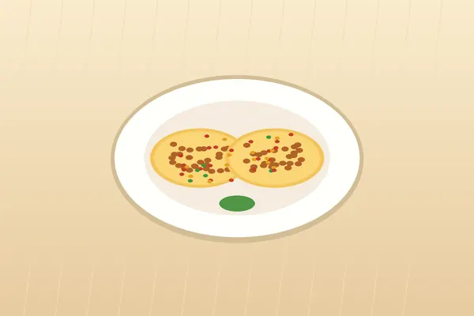
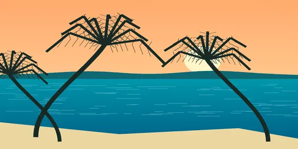

Destinations
Filter by what you like to do, or search by name.
Filter and results
Showing 8 places
 Beach
BeachMaracas Bay
A sweeping north-coast bay with warm water and palm-lined sand.
 Nature
NatureNorthern Range Rainforest
Misty trails, bird calls and waterfalls above the Port of Spain plain.
 Nature
NatureCaroni Swamp
Boat tours of mangroves, where flocks of scarlet ibis roost at dusk.
 Beach
BeachBuccoo Reef, Tobago
Shallow coral gardens, glass-bottom boats and calm turquoise water.
 Culture
CulturePort of Spain
The capital: markets, mansions and the heart of Carnival.

CulturePanyard Visits
Hear steelbands rehearse in neighbourhood panyards before the festival.

FoodStreet Food Trail
Sample doubles, roti and fresh coconut water from friendly vendors.

BeachPigeon Point, Tobago
A famous jetty and white sand with views across the water.
No places match your filters.